1 Introduction
Eliciting application requirements implies understanding the needs of one or more stakeholders even in cases where the business domain may be partially or totally unknown for the analysts who perform the elicitation. Often, requirements are agreed by stakeholders in such a way that the semantics and meanings of each used term are well understood. However, when different points of view [6] of the same business concept exist, ambiguities and/or inconsistencies may arise being them detrimental to the software requirement specification. Although the use of agile approaches has become a key factor in project success1, the companies practicing these approaches claim that the minimal documentation provided by user stories is a challenge for the projects [3]. When the personnel turnover or rapid changes to requirement arises, the application evolution is severely compromised. Traditionally, conciliation tasks are performed using meeting-based tools [8] in order to eliminate requirements ambiguity and inconsistency but in the event of agile approaches the tacit knowledge which is mandatory in this task can be lost on personnel turnover or inaccessibility when the appropriate customer is unavailable. Agile approaches often rely on unit testing for maintaining the alignment of requirements when these suffer changes but large textual descriptions present in documents and the requirement change volatility make it impossible to keep artefacts updated and consistent [1]. When requirement inconsistencies are not detected on time - being this one of the most severe reasons for project cost overrun [21] -, they may become defects in the application. In this context, the effort to correct the faults is several orders of magnitude higher than correcting requirements at the early stages [2].
In practice, agile methodologies reduce the gap between expectations and deliverables by having short development cycles in which a deliverable is released to be confronted with requirements when an iteration ends. This practice often does not focus on documenting the solution (class diagrams, deployment diagrams, etc.) as it is done, for instance, in waterfall or RUP approaches. One of the most important tools for documentation adopted by agile practitioners is the mockup of user interfaces. By using this technique, the way in which business scenarios are instantiated relies on lightweight textual descriptions like User Stories, and wireframes design that easily communicate application behavior to stakeholders.
User Interface mockups are a useful tool for describing scenarios where the real-life data is used for exemplifying the use case instead of abstract descriptions. However, the information they provide is informal and allows misunderstandings by different stakeholders. For example, we could consider a marketplace application showing a product list like the one shown in Fig. 1. For every product, we have an image, a price, a title, a description, a quantity sold, a location, an icon to indicate if the product is new, another to indicate if the seller is premium and one that indicates whether the product has free shipping or not. Although this information is illustrative, it lacks the precision to formally describe the requirements expected in the early stages of software development. The mockup’s reader is not able to distinguish if the regular price or the internet price property is intended to be displayed with the label “$499”. The team members may interpret different possible behaviors accordingly to their point of view, experience and background. The developers may define by themselves the missing information based on this vague definition where any misconception will be detected later with a costly resolution. This is because the mockup tool is an informal specification which lacks of resources to enumerate abstractions such as variables and entities like UML does.
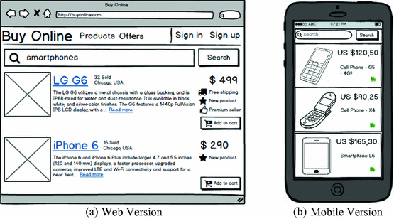
Fig. 1.
Mockup of an e-commerce application.
To make matter worse, as long as new requirements are planned as User Stories in sprints, one or more conflicts can raise. Inconsistencies may also arise from new requirements, which introduce new functionality or enhancements to the application or even from existing requirements that change during the development process. Let’s suppose that for the use case exposed on Fig. 1, there is a new slightly different mobile-based user interface. This new mockup is used to describe a new commercial initiative and it has different business rules that cannot be appreciated by only looking at the mockup. Despite of the mobile counterpart may seem to be a legitimate design because much of the shown information is shared by both versions (mobile and web), there are specific details that belong to the mobile version such as promotional discounts or free-shipping benefits that are imperceptible by the reader at first sight.
To cope with the aforementioned problem, we present in this work as novel contribution a colloquial and user-friendly notation to describe data, navigation, business and interaction requirements upon mockups specifications. In order to evaluate the effectiveness of our approach, we include a controlled experiment that assesses the expressiveness improvement of Mockups using this approach.
The rest of this paper is structured as follows. Section 2 presents some related work on requirements validation and model consistency checking. Section 3 describes our approach to annotate mockups using end-user grammar. Section 4 presents an evaluation of our approach. Finally, Sect. 5 concludes this work discussing our main conclusions and some further work on this subject.
2 Related Work
The analysis and detection of conflicts, errors, and mistakes in the requirements phase are the most critical tasks in requirements engineering [7]. In [5], the authors surveyed the way in which Web engineering approaches deal with main tasks: requirements capture, requirements definition and requirements validation and conclude that most approaches use classical requirements techniques to deal with requirements. According to these, there are four main techniques for requirements validation: reviews, audits, traceability matrix and prototypes; in the Web engineering literature, requirements validation is one of the less treated subjects. Besides, none of these techniques offers a systematic approach for detecting conflicts in requirements. Requirements conflicts arise despite the way we document them, for example in [22] they define a framework for quality of user stories and one of the necessary conditions for a US to be of good quality is that it has to be unique and free of conflicts. Additionally, a characterization of conflict in user stories is presented but there is no mention of mockup’s conflicts.
Mockups tools are gaining attention in the requirements engineering field since they help to build UI specifications in companion with end-users. Also, they help to discover and define non-UI requirements in a language that is closer to them, as opposed to plain textual specifications [11, 13]. Additionally, mockups have been proven to be an effective method to capture fluid requirements [18] – those that are usually expressed orally or informally and are an implicit (and usually lost) part of the elicitation process. The usage of user interfaces prototypes with static structure to define conceptual models has been already shown in [12]. While authors in this work show how E-R models can be derived from structured mockups, their approach is not applicable to informal mockups like the ones that are considered in this work. The ICONIX process [17] proposes to start with Graphical User Interface (GUI) prototypes as a first requirements artifact. While this may provide some initial guideline, in that work the authors do not provide any language or formal guidance to define data requirements. In [14], authors establish a method to work with Use cases and mockups in conjunction, however, Use Cases specification require more effort than a lightweight specification. In [10] the authors explain that sometimes when documenting requirements in agile this is so customer-oriented, that even if the specification is clear for the customer, they might not for the developers, having here conflicts between two actors in software development, and for this they propone Requirement Specification for Developers (RSD); each RSD can have mockups associated, and when a requirement is changed the mockup associated has to be reviewed.
Regarding requirement consistency, last years we have been researching different strategies to capture Web software requirements and validating its consistency and completeness [4, 19]. These approaches were designed to be plugged into “heavy” Model-Driven approaches and do not easily fit in agile development processes. In this work, we aim at introducing tools for the consistency checking of mockups by borrowing concepts from our previous work.
3 Enhancing Mockups with End-User Annotations
After software analysts understand clients’ initial needs, they are able to start sketching mockups (with direct stakeholder participation if desired) in order to informally describe how the application will be browsed and will be used later. Mockups can be modelled using any tool in which the analyst has expertise (for instance, Balsamiq2). We use as a running example the development and extension of an e-commerce site (Fig. 1).
Mockups are used as a tool for validating requirements’ interpretation with stakeholders; they describe how the user interface should look like with illustrative examples belonging to real life scenarios. When using Mockups, analysts take advantages of the fact that the language that they use, user interface widgets, are jargon-free (unlike textual requirements artifacts) and represent a common language between the analysts and the stakeholders [11, 15]. However, while mockups allow describing visual and interaction metaphors their solely visual description is not enough for expressing requirements like validation, navigation/activation, business process aspects, etc. Because of this, informal annotations are usually used in companion with mockups to describe those missing aspects. Throughout this section we describe how we formalize these informal descriptions to solve ambiguities.
3.1 Structural User Interface
The approach presented in this paper extends (using an end-user grammar) the MockupDD [15] methodology which provides a metamodel for enhancing mockup widgets with annotations. In the context of MockupDD, mockups are the main, mandatory requirements specification artifacts which, instead of being discarded as in traditional development approaches, are reused as a basis to define more complex software specifications. This reuse is accomplished through (1) the formalization of the mockup structure and widgets, through what it is called a Structural User Interface (SUI) model and (2) the introduction of a set of formal annotations over the structure defined over such model [15]. Every annotation placed over the formalized mockup represents an independent specification related, for instance, to content, navigation, behavior or any other aspect that can be specified over a visual representation of the UI. The semantics defined for every annotation allows formalizing requirements over mockups. Consequently, it allows generating code or actions interpreted at runtime, translating them to semi-textual representations to discuss requirements captured over the mockups with stakeholders. In this case, annotations (called tags from now on) are only used to formalize and refine requirements and, eventually, to detect conflicts. Our approach relies on the definition of formal tags which enhance the widgets that composes the UI. For a sake of space, in this work we will omit details of the SUI model since it is not strictly related to the approach – more details about it can be found in [15].
3.2 End-User Grammar Annotations Catalogue
In this section, we introduce the end-user annotation catalogue for enriching the mockup specifications that will be used later in the examples. In order to improve Mockup element description and solve the lack of formality, in this step we use a Domain Specific Language called End User Grammar (EUG) [15] which focuses on describing information source, format and information relationships. Each annotation is a structured colloquial definition which is intelligible to end-users because it does not present any technical concept that would limit its understanding. Next, we introduce annotations patterns and their description.
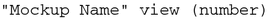
(1)
Defines an ID (
number
) for a mockup in order to be referenced as a destination for navigation/activation by other tag.
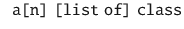
(2)
Denotes that an object or a list of objects of class
Class
is shown or can be manipulated in the UI. For instance, a list in a mockup that shows an index of products.
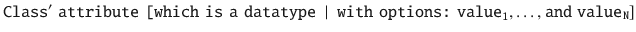
(3)
Specifies that the attribute of an object of class
Class
(called
attribute
) is shown or can be edited through an underlying graphical widget. Optionally, a
datatype
can be defined for that attribute (one of
Date
,
String
,
Integer
,
Decimal
,
Boolean
,
Integer
an enumeration or
Blob
). If no
datatype
is specified,
String
is assumed. In the event of an enumeration it is possible to list possible values using “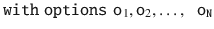” clause.
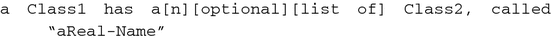
(4)
Denotes that an object of
Class2
is shown or can be manipulated through the underlying element in the UI. However, this element is obtained navigating from an association called
associationName
from another element of class
Class1
.
(5)
Denotes that an object of class
Subclass
is shown or can be manipulated in the User Interface and that the class of this object (
Subclass
) inherits from another one called
Superclass
.
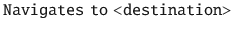
(6)
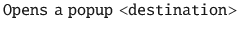
(7)
Denotes that, when executing a default action over the underlying graphical element (e.g., a click) the destination mockup will be shown, navigated to or focused – destination mockup should be tagged with
mockupName view (number)
and <destination> should reference that number
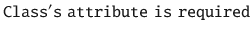
(8)
Denotes that a non-empty value for attribute
attribute
of class
Class
is required.
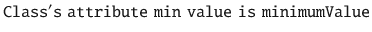
(9)
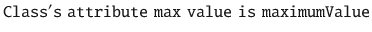
(10)
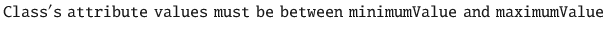
(11)
Denotes that the values for attribute
attribute
in class
Class
must be less than or equal to a
maximumValue
and/or greater than or equal to a
minimumValue
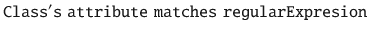
(12)
The contents of attribute
attribute
of class
Class
must be formatted to match a pattern (
regularExpression
). For instance, phone numbers and ID data have specific formatting constraints.
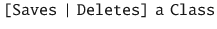
(13)
Denotes that, when clicking or triggering a default action over the widget an instance of
Class
(which is being edited) will be created or deleted; respectively.
(14)
Denotes that an arbitrary action (described textually) will be invoked when executing the default action over the widget. This construct is used when the expected behavior is not already defined but needs to be pointed out.
3.3 Colloquial Data Description
Mockups often use a real-life scenario defined with illustrative data to describe what User eXperience (UX) the application will provide. During this step, analysts must enrich mockups graphical elements with a template-based colloquial description.
The main advantage of EUG is that it can be easily understood by end-users and also provides the formality required to be processed and, consequently, allows a better validation of requirements. Each description expression must match a specific template with well-defined placeholders that will ease later automate processing.
In Fig. 2, we can see how the mockup presented in Fig. 1a was documented using the tags. For the sake of space, we present in the examples some simple but illustrative sets of annotations that specify the requirements, but the sets of tags can be more exhaustive covering a larger set of elements. In the figure, a mockup built with Balsamiq tool is presented where tags are included using markup capabilities provided by the tool itself. The requirement is first identified with the name “Products list” using Grammar 1 syntax (presented in Sect. 3.2). Then, from the expression “Product’s delivery flag with options: free, paid” (Grammar 3) we can identify the Product business entity that has an attribute called delivery flag that has two possible values: free and paid. Moreover, some behaviors are related to the “Add to cart” button, which creates a new instance of Product Purchase object through “Saves a Product Purchase” (Grammar 13) and navigates to a Cart view through “Navigates to 2” (Grammar 6). The reader should note that the entities considering its attributes and types as well as actions will be used in the consistency analysis of mockups later.
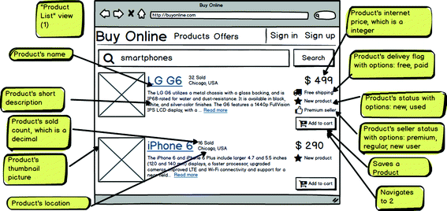
Fig. 2.
Descripted mockups using our Colloquial DSL.
In Fig. 3, the Shopping Cart mockup is shown. This mockup is navigated to after the user adds a new product in their
Product Purchase
clicking in the “Add to cart” button in mockup depicted in Fig. 2, after the Product Purchase is created. The Shopping Cart mockup mostly shows a list of Product Purchase and the mockup mostly describes their properties. But, it also features a relationship between the Product Purchase and the Product - since a Product Purchase represents a purchase of specific quantity of an individual Product (Grammar 3). This relationship is expressed through the “Product Purchase has a Product, called ‘product to be purchased’” tag (Grammar 4). Finally, it also includes an annotation
specifying
that the quantity of a Product Purchase should be 1 as a minimum (Grammar 9).
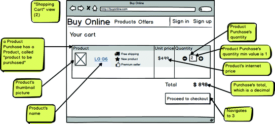
Fig. 3.
Checkout mockup
3.4 Using End-User Grammar to Identifying Requirement Inconsistencies
A candidate conflict arises when there are syntactic differences between requirements expressed through mockups. These differences may be common mistakes [4]: (a) as consequence of an element absence in one mockup but its presence in the other, (b) the usage of two different widgets for describing the same information which contradict themselves, or (c) a configuration difference in an element such as the properties values of a widget. This situation may arise when two different stakeholders have different views on a single functionality, or when an evolution requirement contradicts an original one. By annotating mockups, we are able to reason over the specification and, both manually or using automatic tools when possible, end-user grammar allows to detect inconsistencies that are not clear with plain mockups – or when using mockups with colloquial, natural language annotations.
A basic conflict detection can be performed by comparing mockups so as to detect the absence of elements or elements’ constructions differences. Since Mockups are containers of widgets, we can apply difference operations of set collections in order to detect inconsistencies. For example, currently, it has become common for software products to release both a mobile and a Web version. The arrival of a new mobile version should have the same business goal although it runs in a different platform with different interaction and presentation features. For example, in Fig. 4, a different stakeholder suggests an alternative mockup version to the one presented in Fig. 2. Although their aim is to present the same underlying concept, they have significant differences that would be overlooked without our end-user grammar. In Fig. 2, The Product List mockup defines a Product entity which has Description, Internet Price, Delivery Flag, Thumbnail, Status, Sold Count, and Location attributes. In Fig. 4, a different business entity version also called Product comprises a different set of attributes: Description, Internet Price, Delivery Flag, and Thumbnail. We can appreciate two types of differences: one related to the attribute existence or absence and the other related to the attribute configuration. Regarding the former, there are attributes that appear in one figure and not in the other, for example: Status, Sold Count and Location. On the other hand, there are differences related to the type of the attributes, for example in one of its versions a Product has a Delivery Flag as an enumeration and in the other it’s a Boolean. Also, the Price is defined as an Integer number in the first version while in its counterpart it’s a decimal number (Grammar 3).
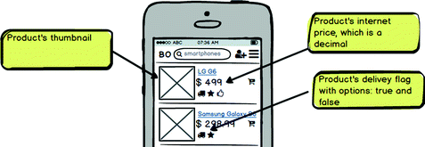
Fig. 4.
Annotated Product List mobile version.
4 Evaluation
In this section, we conduct an evaluation of the approach to measure how much it assists in the understanding of mockups following Wohlin et al. guidelines [20]. First, we define the goals, hypotheses and variables of the experiment. Then, we proceed to define metrics and materials considered. After that, we detail subjects, instrumentation, and data collection methods used in the experiment. Then we conduct an analysis of results and their implication. Finally, we consider threats to validity of the evaluation.
4.1 Goals, Hypotheses and Variables
Following the Goal-Question-Metric (GQM) format as is suggested in [20], we define the goal of the experiment in the following way:
Analyze Mockups enhanced with end-user’s annotations for the purpose of measure how requirements documented with mockups are improved with respect to their expressiveness from the point of view of researchers in the context of software analysts and developers.
After defining the Goal, now we proceed to define the different questions that will allow to answer them. We profit from the precision and recall [9] concepts from information retrieval research field and adapted them to our experiment so as to measure quality of responses.
Our main Research Questions (RQ) are:
RQ1: Do End-user annotations improve the relevancy of the data elements identified in mockups?
For this RQ, we consider as null hypothesis H0 that there is no difference in the accuracy of identification of involved data by subjects using only mockups and annotated mockups. The relevancy is the response variable which will be measured using a precision metric. The metric is used to assess how many data items identified by the subject in a mockup are relevant accordingly a leading case. In Eq. 15, the formula is depicted where the precision is computed given a subject and a mockup.
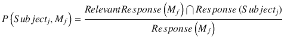
(15)
As alternative hypothesis Ha, we consider there is an improvement in the mean of the response accuracy of subjects using end-user annotations (µEU) against the basic support of mockups(µMOCK): µMOCK ≤ µEU.
RQ
2
: Do End-user annotations improve the completeness of the data elements identified in mockups?.
For this RQ, we consider as null hypothesis H0 that there is no difference in the accuracy of identification of involved data by subjects using only mockups and annotated mockups where the completeness is the response variable. The recall metric is used to assess how many relevant data items are identified by the subjects in a mockup. In Eq. 16, the Recall formula is presented where the precision is computed given a subject and a mockup.
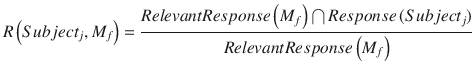
(16)
As alternative hypothesis Ha, we consider there is an improvement in the mean of the response accuracy of subjects using end-user annotations (µEU) against the basic support of mockups(µMOCK): µMOCK ≤ µEU.
4.2 Experiment Design
In order to answer these questions, we designed a between-subject design experiment where subjects were asked to identify entities and data present in mockups; from now, Experiment Variable (EV). The subjects were randomly divided into two groups for the two alternatives of the approach (the experiment’s factor): mockups without any kind of annotations (Control) and mockups with the use of presented end-user annotations (Treatment).
In this experiment, we focused on measuring how the communication of requirement is improved with annotation and we did not consider evaluating the user experience related to the tagging task or comparing the performance against other approach.
4.3 Experimental Unit
The requirement gathering task using mockups requires to document mockups and communicate them, firstly, to stakeholders to validate its definition and later to the developers in order to start its development. For this task, we have modeled use cases using mockups for an e-commerce site – which mockups were similar to the ones depicted in Fig. 1. The main functionalities considered in use cases were system registration and the view of a product’s details. Both versions used the same mockups but one of them included the annotations defined in Sect. 4 to enhance their description. Both the modeling and tagging tasks results were validated by senior analysts prior to the experiment.
To evaluate subject’s understanding of the requirements, we asked them to fill out a form where they should record each data definition they can extract from the mockups, its expected data type, any kind of validation and the associated widget. Since mockups depict scenarios using examples rather than abstract variables or placeholders, they lack any kind of formalism so the datatype, validations and any other specification is the result of the mockup’s reader interpretation. Both the mockup and the form are available online3.
4.4 Subjects, Instrumentation, and Data Collection
During the experiment, the subjects received a form and a set of mockups. Subjects were 34 developers from different software companies. On average, they were 31 years old, had more than 6 years of programming experience and approximately 3.5 years in requirement analysis tasks. A group of 18 subjects performed the experiment with mockups annotated with end-user grammar meanwhile a group of 16 subjects performed the experiment based on simple mockups. They were motivated and committed to the experiment, as we were sponsored by the CEOs and managers that notified the subjects about the company’s commitment to the research experiment.
The experiment protocol was executed in the same way with all the subjects. First of all, they received a brief introduction to the material which had to be used during the experiment. In the case of annotation-based material, the subjects were trained about the end-user grammar usage. Next, participants were asked to complete an expertise survey, read the experiment description, study the mockups, and fill out the questionnaire’s form. Each subject performed fully experiment supervised by a researcher who ensured similar facilities layout, infrastructure, and subject isolation conditions. Additionally, the researcher controlled the subject to avoid any answer modification as long as she advanced in the experiment. To achieve the task of processing the collected results, we first processed and digitalized responses. Then, we used different scripts based on Python language (version 3.6.1) and Scipy library (version 0.19.0) to compute Precision and Recall formulas.
4.5 Analysis and Evaluation of Results and Implication
For the analysis of samples, firstly we defined the Relevant Data Elements (RDE) present in the mockups to be used to compute precision and recall metrics. Then, once samples were digitalized, we checked samples against RDE for computing True Positive (TP), and False Positive (FP) elements. That is to say, those elements that a subject correctly reported (TP) when checking whether his response is included in the relevant element set, or erroneously reported (FP). Finally, all samples were processed using Mann–Whitney U test [20], which is a non-parametric statistical hypothesis test technique, considering a standard confidence level (α) of 0.05. This technique can be used with unequal sample size which is the case of this experiment. Additionally, we computed the effect size using Cliff’s Delta technique.
The analysis was performed mostly in an automated way using Python-based scripts that resolved the recall and precision calculation, and the hypothesis testing.
In order to answer our research question, we evaluated different possibilities of computing subject’s responses and the outcome is presented in Table 1. As we asked subjects to identify abstract data present in UI (the attribute), its data type, and its owner entity, we considered four evaluation strategies for all the possible combinations of evaluating such tuple: (i) only the abstract data (attribute) identified in the response, (ii) the attribute and its data type, (iii) the attribute and its owner entity, and (iv) the attribute, its data type and its owner entity tuple. For example, to evaluate whether the tuple birthday, String type, and owned by the entity Person is a valid response or not. For every mentioned evaluation strategy, we calculated Precision (P) and Recall (R) metrics of subject responses when using both mockups without annotations to measure how accurate were their answers. For each metric we reported, in Table 1, the average and standard deviation for each approach (Mockup and Annotation columns respectively), the Cliff’s delta value for the effect size, and the p-value resulting from the hypothesis testing that compares the means of both approaches. We can realize how annotated mockups samples excel in performance in all evaluation type. In all cases, the p-value was lower than the alpha level 0,05. Therefore, there is enough evidence to support the alternative hypothesis. That is, the mockup with end-user annotation improves the
Table 1.
Sample results
Mockup 1 | Mockup 2 | ||||||||||||||
|---|---|---|---|---|---|---|---|---|---|---|---|---|---|---|---|
Mockup | Annotation | Cliff’s delta | P-value | <0.05 | Mockup | Annotation | Cliff’s delta | P-Value | <0.05 | ||||||
Evaluation | Metric | Avg. | Std. | Avg. | Std. | Avg. | Std. | Avg. | Std. | ||||||
(i) Attribute | P | 0.48 | 0.16 | 0.65 | 0.19 | 0.55 | 0.003 | 0.52 | 0.10 | 0.61 | 0.11 | 0.43 | 0.020 | 
| |
R | 0.31 | 0.08 | 0.45 | 0.10 | 0.70 | 0.000 | 
| 0.44 | 0.09 | 0.54 | 0.07 | 0.53 | 0.003 | 
| |
(ii) Attribute, Type | P | 0.33 | 0.15 | 0.55 | 0.18 | 0.69 | 0.000 | 
| 0.50 | 0.13 | 0.60 | 0.12 | 0.39 | 0.031 | 
|
R | 0.21 | 0.09 | 0.38 | 0.11 | 0.77 | 0.000 | 
| 0.43 | 0.11 | 0.52 | 0.08 | 0.49 | 0.005 | 
| |
(iii) Attribute, Entity | P | 0.00 | 0.00 | 0.47 | 0.29 | 0.78 | 0.000 | 
| 0.33 | 0.23 | 0.55 | 0.19 | 0.57 | 0.003 | 
|
R | 0.00 | 0.00 | 0.35 | 0.21 | 0.78 | 0.000 | 
| 0.29 | 0.21 | 0.48 | 0.16 | 0.56 | 0.002 | 
| |
(iv) Attribute, Type, Entity | P | 0.00 | 0.00 | 0.39 | 0.27 | 0.72 | 0.000 | 
| 0.31 | 0.22 | 0.53 | 0.19 | 0.56 | 0.004 | |
R | 0.00 | 0.00 | 0.28 | 0.19 | 0.72 | 0.000 | 
| 0.27 | 0.21 | 0.47 | 0.15 | 0.58 | 0.002 | 
| |
To calculate the effect size, we used cliff’s delta technique which has as a result value in (–1,1) range. In this case, the values are bigger than 0.474 [16] in all evaluation types depicting a high meaningfulness.
Additionally, we computed the time required for each individual to complete the experiment. It is noteworthy that the subjects extracting information from annotated mockups performed better (requiring less time) than the subjects working on plain-annotated. For annotated mockups 1 and 2, it took to subject on average 297 s and 880 s; respectively. Conversely, for non-annotated mockups, it required 332 s and 947 s.
The recall metric points out that there is an effective understanding of the pieces of data comprised by the mockup. The subjects reported a greater number of relevant elements than those subjects which worked with simple mockups. That means, the subjects were more accurate with the domain element description. The precision was also higher having less irrelevant responses than mockups without annotations. This is another important indication about the responses that they did not combine valid and invalid information reducing the noise in the communication between clients and analysts. For example, without the annotations, subjects defined different irrelevant business entities such Login, User, and Person to compose UI attributes.
Summarizing, participants that were subjected to mockups with annotations where more time-efficient and precise in their answers that those that worked with simple mockups and oral clarifications (if required).
4.6 Threats to Validity
There are several threats to validity that were considered during the experiment design. This research presents a preliminary result and for space sake.
Construct Validity.
The experiment was designed to measure how the use of end-user annotations improves the communication of requirements. In order to reduce the experiment’s complexity and bias introduction possibility, we defined the method (simple mockups or annotated mockups) as the only variable. The reader must note that our approach is not being compared with another approach, and, indeed, it is under evaluation how the annotations extension improves basic mockups.
Internal Validity.
To avoid any misunderstanding during the experiment, we presented each material in a brief introduction before subjects performed the experiment and during the experiment, any enquiry related to the sentences was answered without introducing a bias to the sample. The subjects were selected randomly and all of them were working in software companies in Argentina and Spain. The provided material was the same to all subject. We also checked that all the users had basic knowledge in e-commerce application (just a simple users) and had not participated in the development or requirement analysis in any application of this kind.
External Validity.
The subjects were software engineers who have played the role of developers and/or analyst during their career. Although their experience levels were different, they are all exposed to the regular responsibilities of any software practitioners: meet with clients, understand requirements, develop the software and honor deadlines for software delivery. A broader experiment considering different subject of different cultures who have worked on different business domains will improve the generality of our claims.
Conclusion Validity.
The experiment was based on objective metrics evaluated with all gathered data without any exclusion to guaranty that the outcome of the experiment analysis will be the same and avoiding hypothesis fishing. We used non-parametric tests which have fewer constraints than parametric ones but make it more complex to compute the power and effect size. Therefore, we used well-known guidelines for reporting empirical experiments as checklists for confirming the requirements of the test techniques. Finally, in order to avoid the impact of random irrelevancies on the experiment, we used a large number set of samples that helped the irrelevancies to become diluted.
5 Conclusion and Further Work
We have presented a novel approach for enriching mockups with annotation so that the mockups improve their expressiveness and understandability minimizing the risk of requirement’s misunderstanding. The approach is modular, so it can be plugged in any software engineering approach to ensure application consistency, validate requirements, and save time and effort to detect and solve error in latest software development steps. We have presented some simple examples that illustrate the approach feasibility. Additionally, we present a preliminary evidence highlighting the benefits of our approach, but it is required more validation to support stronger claims.
We are currently working on a tool for the processing of annotations so as to provide a semi-automate syntactic and semantic analysis of inconsistencies. In these lines, some methodologies like Design Sprint [22] are proposing to build realistic prototypes to be validated with final users as soon as possible. Then, these methodologies propose to see your finished product and customer reactions before making any expensive commitments. Then, it’s also necessary to explore in future how to adapt and process these tags notations in general purpose tools like Microsoft PowerPoint and Keynote.
A user experience evaluation for the tagging task will help to identify improvements that increase the quality of the requirement specification.

Open Access This chapter is licensed under the terms of the Creative Commons Attribution 4.0 International License (http://creativecommons.org/licenses/by/4.0/), which permits use, sharing, adaptation, distribution and reproduction in any medium or format, as long as you give appropriate credit to the original author(s) and the source, provide a link to the Creative Commons license and indicate if changes were made.
The images or other third party material in this book are included in the book's Creative Commons license, unless indicated otherwise in a credit line to the material. If material is not included in the book's Creative Commons license and your intended use is not permitted by statutory regulation or exceeds the permitted use, you will need to obtain permission directly from the copyright holder.
References
1.
Bjarnason, E., et al.: Challenges and practices in aligning requirements with verification and validation: a case study of six companies. Empir. Softw. Eng. 19(6), 1809–1855 (2014)Crossref
2.
Boehm, B., et al.: Developing groupware for requirements negotiations: lessons learned. IEEE Softw. 18(3), 46–55 (2001)Crossref
3.
Cao, L., Ramesh, B.: Agile requirements engineering practices: an empirical study. IEEE Softw. 25(1), 60–67 (2008)Crossref
4.
Escalona, M.J., et al.: Detecting Web requirements conflicts and inconsistencies under a model-based perspective. J. Syst. Softw. 86, 3024–3038 (2013)Crossref
5.
Escalona, M.J., Koch, N.: Requirements engineering for web applications: a comparative study. J. Web Eng. 2(3), 193–212 (2003)
6.
Kotonya, G., Sommerville, I.: Requirements engineering with viewpoints (1996)Crossref
7.
Lucassen, G., et al.: Improving agile requirements: the Quality User Story framework and tool. Requir. Eng. 21(3), 383–403 (2016)Crossref
8.
De Lucia, A., Qusef, A.: requirements engineering in agile software development (2010)
9.
Manning, C.D., et al.: Introduction to Information Retrieval. Cambridge University Press, Cambridge (2008)Crossref
10.
Medeiros, J., et al.: An approach based on design practices to specify requirements in agile projects. In: Proceedings of the Symposium on Applied Computing - SAC 2017, pp. 1114–1121 (2017)
11.
Mukasa, K.S., Kaindl, H.: An integration of requirements and user interface specifications. In: 6th IEEE International Requirements Engineering Conference, pp. 327–328. IEEE Computer Society, Barcelona (2008)
12.
Ramdoyal, R., Cleve, A.: From pattern-based user interfaces to conceptual schemas and back. In: Jeusfeld, M., Delcambre, L., Ling, T.-W. (eds.) ER 2011. LNCS, vol. 6998, pp. 247–260. Springer, Heidelberg (2011). https://doi.org/10.1007/978-3-642-24606-7_19Crossref
13.
Ravid, A., Berry, D.M.: A Method for Extracting and Stating software requirements that a user interface prototype contains. Requir. Eng. 5(4), 225–241 (2000)Crossref
14.
Reggio, G., et al.: Improving the quality and the comprehension of requirements: disciplined use cases and mockups. In: Proceedings - 40th Euromicro Conference Series on Software Engineering and Advanced Applications, SEAA 2014, pp. 262–266 (2014)
15.
Rivero, J.M., et al.: Mockup-driven development: providing agile support for model-driven web engineering. Inf. Softw. Technol. 56(6), 670–687 (2014)Crossref
16.
Romano, J., et al.: Appropriate statistics for ordinal level data : should we really be using t-test and Cohen’s d for evaluating group differences on the NSSE and other surveys? In: Florida Association of Institutional Research Annual Meeting, pp. 1–33 (2006)
17.
Rosenberg, D., et al.: Agile Development with ICONIX Process—People, Process, and Pragmatism. A-Press, New York (2005)
18.
Schneider, K.: Generating Fast feedback in requirements elicitation. In: Sawyer, P., Paech, B., Heymans, P. (eds.) REFSQ 2007. LNCS, vol. 4542, pp. 160–174. Springer, Heidelberg (2007). https://doi.org/10.1007/978-3-540-73031-6_12Crossref
19.
Urbieta, M., Escalona, M.J., Robles Luna, E., Rossi, G.: Detecting conflicts and inconsistencies in web application requirements. In: Harth, A., Koch, N. (eds.) ICWE 2011. LNCS, vol. 7059, pp. 278–288. Springer, Heidelberg (2012). https://doi.org/10.1007/978-3-642-27997-3_27Crossref
20.
Wohlin, C., et al.: Experimentation in software engineering: an introduction. Kluwer Academic Publishers, Norwell (2000)Crossref
21.
Yang, D., et al.: A survey on software cost estimation in the chinese software industry. In: Proceedings of the Second ACM-IEEE International Symposium on Empirical Software Engineering and Measurement - ESEM 2008, p. 253 (2008)
22.
The Design Sprint — GV. http://www.gv.com/sprint/
Footnotes